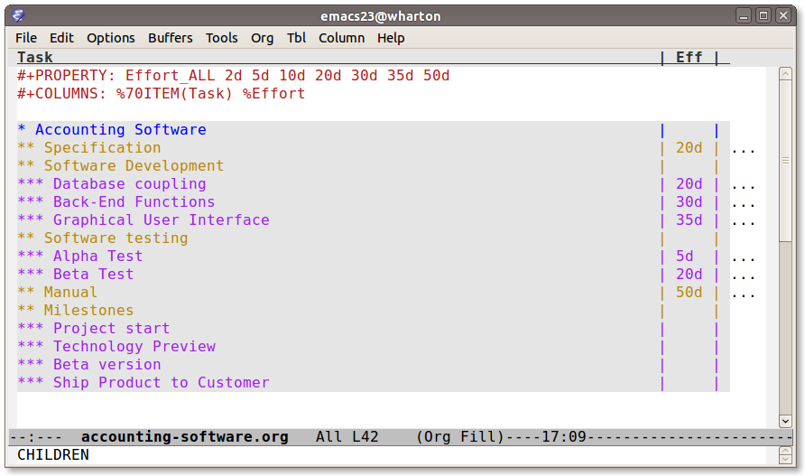
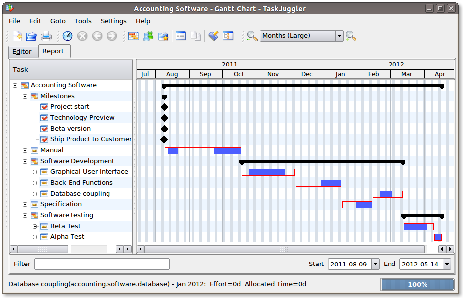
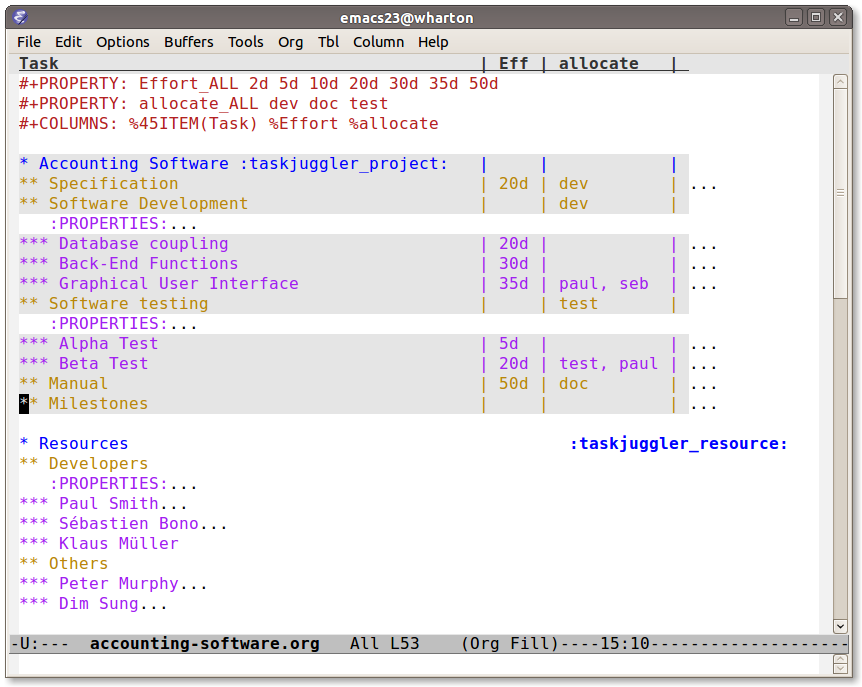
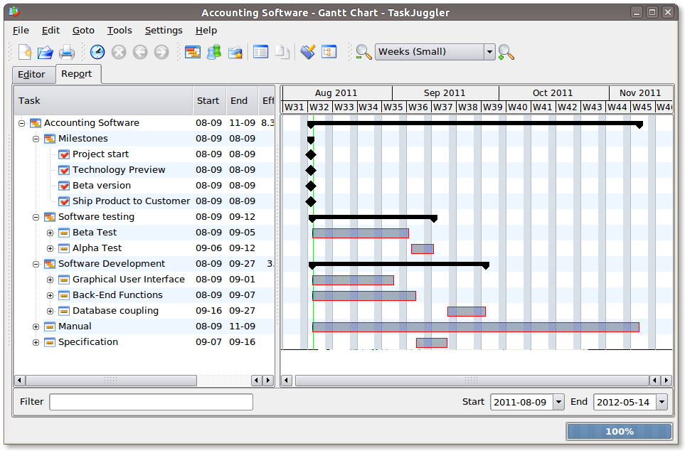
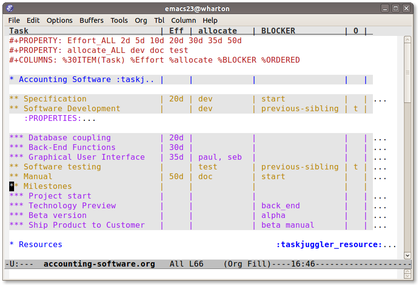
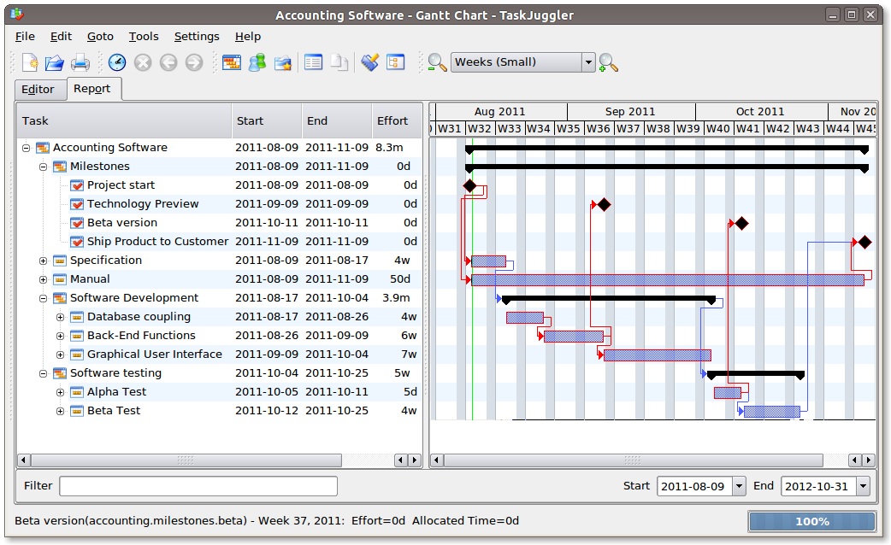
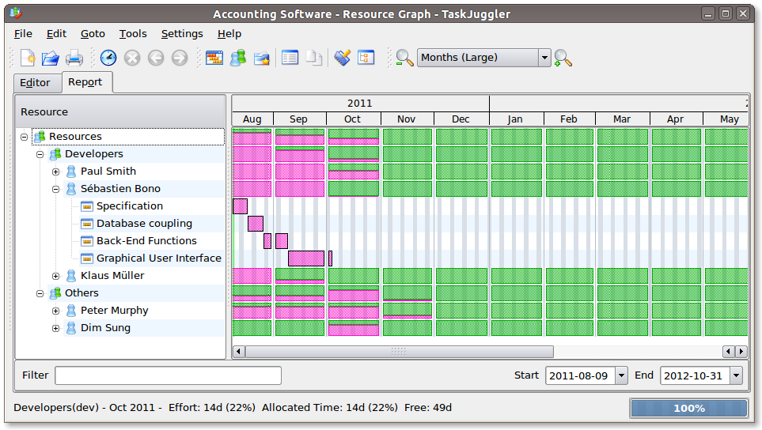

Creating Gantt charts by Exporting to TaskJuggler
Table of Contents
Introduction
Org mode is an excellent tool for project planning as Peter Jones has shown in his article on project planning. He first breaks the project into features and tasks, then estimates the effort and from that presents a project plan. In this tutorial we will take this one step further, assign resources to the tasks, schedule the tasks and create the corresponding gantt chart for this project.
We will be using TaskJuggler to handle the task scheduling, resource leveling and creation of a myriad of charts (such as Gantt chart) for your customer or your Pointy-haired Boss.
Plan your project
You start out as you normally would by breaking down the project into tasks. Let’s take the following example where you have a project to create an accounting software:
* Accounting Software ** Specification ** Software Development *** Database coupling *** Back-End Functions *** Graphical User Interface ** Software testing *** Alpha Test *** Beta Test ** Manual ** Milestones *** Project start *** Technology Preview *** Beta version *** Ship Product to Customer
Estimate the effort
Now that you’ve figured out the tasks it’s time to estimate the
efforts for each task. By using column view this can be done very
efficiently. It also helps to define the COLUMNS and default values
for the Effort property as shown in the following screen shot:

Figure 1: Estimating effort using column view
Your resulting Org mode project file will look somewhat like the following:
#+PROPERTY: Effort_ALL 2d 5d 10d 20d 30d 35d 50d #+COLUMNS: %70ITEM(Task) %Effort * Accounting Software ** Specification :PROPERTIES: :Effort: 20d :END: ** Software Development *** Database coupling :PROPERTIES: :Effort: 20d :END: *** Back-End Functions :PROPERTIES: :Effort: 30d :END: *** Graphical User Interface :PROPERTIES: :Effort: 35d :END: ** Software testing *** Alpha Test :PROPERTIES: :Effort: 5d :END: *** Beta Test :PROPERTIES: :Effort: 20d :END: ** Manual :PROPERTIES: :Effort: 50d :END: ** Milestones *** Project start *** Technology Preview *** Beta version *** Ship Product to Customer
Generate a Gantt chart
Before you now export the project to TaskJuggler you need to tell the
exporter in which tree it can find the tasks. You do this by adding
the tag taskjuggler_project to the node “Accounting Software”1.
Do this by moving to the “Accounting Software” headline and typing the
following:
C-c C-c taskjuggler_project RET
This allows you to have other nodes for this project such as an introduction or general notes.
To export the project to TaskJuggler you simply type
M-x org-export-as-taskjuggler-and-open
This will open your project in TaskJugglerUI as illustrated below

Figure 2: Gantt chart in TaskJugglerUI
Since we have not assigned any resources to work on the project the exporter assumes that you will be the one working on it and has assigned all tasks to you. The tasks have been serialized so that you will not have to many things to do at once, i.e. the resources will be leveled.
Assign resources
The next step is to list all the resources working on the project and
assign the tasks to them. Create a node for the resources. You can
group the resources by creating hierarchies. Tag the resource tree
with the tag taskjuggler_resource so that the exporter knows where to
look for resource definitions2.
* Resources :taskjuggler_resource: ** Developers :PROPERTIES: :resource_id: dev :END: *** Paul Smith :PROPERTIES: :resource_id: paul :END: *** Sébastien Bono :PROPERTIES: :resource_id: seb :END: *** Klaus Müller ** Others *** Peter Murphy :PROPERTIES: :resource_id: doc :END: *** Dim Sung :PROPERTIES: :resource_id: test :END:
As you’ll note I also added some resource_id properties to some of
the resources (or resource groups). I will use these identifiers to
allocate the resources to the tasks. The exporter will create unique
ids for the resources automatically3, but if you want to use
short forms it’s better to define resource_id properties for your
resources. This will also allow you to define default values for the
allocation as follows:
#+PROPERTY: allocate_ALL dev doc test
The easiest way to assign resources is again the column view mode. There is no need to allocate a resource to every task, as allocations are inherited in TaskJuggler4. You’ll note in the screen shot below that some tasks have more than one resource assigned to them. TaskJuggler will calculate the duration of the task based on the effort and the resources working on this task.

Figure 3: Assign resources
If we now export the project you’ll see that TaskJuggler scheduled some tasks in parallel (as there are several resources now which can work in parallel). See the screen shot below:

Figure 4: Gantt Chart with multiple resources
Obviously we need to define dependencies between the tasks.
Define dependencies
There are several ways to define dependencies between tasks. When coming from an Org mode background you probably want to define them using the facilities provided by Org mode, which are either
- The
ORDEREDproperty which allows you to state that the child tasks have to be completed in the order they appear (top most first). - The
BLOCKERproperty which allows you to state that a task depends on either- a previous sibling (“previous-sibling”) or
- any other task by stating the
task_idproperty of the predecessor
Again, it is probably easiest to define the dependencies using the column view as shown below in the screen shot:

Figure 5: Defining dependencies using column view
Lastly there is also the depends property which corresponds to the
TaskJuggler terminology. It can be used the same way as the BLOCKER
property. This is illustrated below where the “Software Development”
for example is blocked by the task “Specification”, i.e. it has to
wait until the specification is done. The task “Software Development”
is defined as ORDERED, i.e. all the subtasks of it have to be
completed in sequence. Another example is the milestone “Ship Product
to Customer” which is waiting until the Beta test and the Manual are
done.
#+PROPERTY: Effort_ALL 2d 5d 10d 20d 30d 35d 50d #+PROPERTY: allocate_ALL dev doc test #+COLUMNS: %30ITEM(Task) %Effort %allocate %BLOCKER %ORDERED * Accounting Software :taskjuggler_project: ** Specification :PROPERTIES: :Effort: 20d :BLOCKER: start :allocate: dev :END: ** Software Development :PROPERTIES: :ORDERED: t :BLOCKER: previous-sibling :priority: 1000 :allocate: dev :END: *** Database coupling :PROPERTIES: :Effort: 20d :END: *** Back-End Functions :PROPERTIES: :Effort: 30d :task_id: back_end :END: *** Graphical User Interface :PROPERTIES: :Effort: 35d :allocate: paul, seb :END: ** Software testing :PROPERTIES: :ORDERED: t :BLOCKER: previous-sibling :allocate: test :END: *** Alpha Test :PROPERTIES: :Effort: 5d :task_id: alpha :END: *** Beta Test :PROPERTIES: :Effort: 20d :task_id: beta :allocate: test, paul :END: ** Manual :PROPERTIES: :Effort: 50d :task_id: manual :BLOCKER: start :allocate: doc :END: ** Milestones *** Project start :PROPERTIES: :task_id: start :END: *** Technology Preview :PROPERTIES: :BLOCKER: back_end :END: *** Beta version :PROPERTIES: :BLOCKER: alpha :END: *** Ship Product to Customer :PROPERTIES: :BLOCKER: beta manual :END: * Resources :taskjuggler_resource: ** Developers :PROPERTIES: :resource_id: dev :END: *** Paul Smith :PROPERTIES: :resource_id: paul :END: *** Sébastien Bono :PROPERTIES: :resource_id: seb :END: *** Klaus Müller ** Others *** Peter Murphy :PROPERTIES: :resource_id: doc :limits: { dailymax 6.4h } :END: *** Dim Sung :PROPERTIES: :resource_id: test :END:
If you export the example above you’ll TaskJuggler will schedule the tasks as shown in the screen shot below

Figure 6: Gantt Chart with dependencies
Also TaskJuggler will give you a overview how busy youre resources will be and what they are working on. See below for a screen shot:

Figure 7: Resource usage chart
Finally you can generate good-looking project plans in PDF by printing from TaskJuggler. This will make any Pointy-haired Boss happy.
Export of other properties
Generally the exporter writes a node property that is known to
TaskJuggler (such as shift, booking, efficiency, journalentry,
rate for resources or account, start, note, duration, end,
journalentry, milestone, reference, responsible, scheduling,
etc for tasks) as is to the TaskJuggler file.
Other properties such as completeness or priority are derived from
implicit information in the Org mode file. The TODO state for example
determines the completeness. A task will be exported with 100%
complete (complete 100) if it is marked as done. The priority of a
task will be determined through its priority cookie.
Footnotes:
You can customize this tag
Again, of course this tag can be customized
by downcasing the headline, replacing non-ascii characters with ’_’ and picking the first word if it is unique
In TaskJuggler the allocations are cumulative, the exporter however adds some code so that inherited allocation are ignored when explicitly assigning a resource.